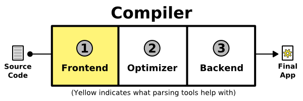
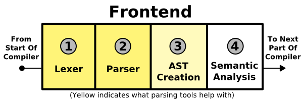
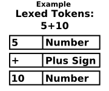
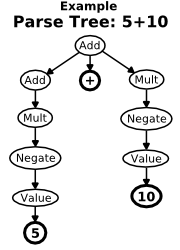
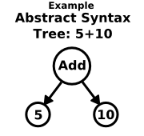
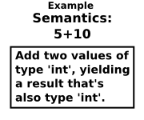

|
Parsing System (v0.9)
|
Never Used a Parsing Tool?
How a Compiler Works
(Or: How can I use Goldie to create a compiler?)
There's a common misconception that language tools and computer science
theory have advanced enough that creating a compiler can be fully-automated.
This is not true. Only certain parts of writing a compiler can be
automated, and it's only these parts that parsing tools (such as Goldie, GOLD,
Lex/YACC, Flex/Bison and ANTLR) automate. A fully-working compiler is a
complex program that contains many different parts.
Here is a diagram of the three main parts of a compiler:

-
Frontend:
This is the only part of a compiler that automated parsing tools deal with.
Even so, automated parsing tools only deal with part of the frontend
(see the section
The Frontend: Lexing, Parsing, AST and Semantics
below).
A compiler takes source code as input and outputs a program.
The frontend is the "input" part. It brings in your source code, attempts to
understand it, turns it into some sort of internal representation, makes sure
everything is correct and gives errors if the source code has a problem.
-
Optimizer:
Optimization is an optional, but very common, step.
It adjusts the program being compiled so it runs faster, or in some cases,
so it takes up less space. Sometimes this is considered to be part of either
the frontend or the backend, or split between both.
Automated parsing tools such as Goldie don't help with this step. This has to be
either written manually, or an existing optimizer could be used. Either way,
this can be a fair amount of work.
-
Backend:
The (somewhat amusingly-named) backend is the "output" part of a compiler.
It takes the internal representation of the code and converts it into either
machine code (possibly for a Virtual Machine) or another programming language.
In the case of generating machine code, there's a lot of associated
computer science theory (see the books in More Information).
For many languages, the last part of the backend is the linker. The linker
combines the many different compiled parts of a program (usually one for each
original source file) into one single program. Often, this is done by either a
completely separate program (as with many natively-compiled languages,
such as D or C/C++) or by the host platform itself (as with dynamically-loaded
libraries and many virtual machines such as JVM and .NET).
As with the optimizer, automated parsing tools don't help with this step.
The backend has to either be written manually, or an existing backend can be
adapted.
The Frontend: Lexing, Parsing, AST and Semantics
The frontend handles the first step in the compiling process.
Like the compiler itself, the frontend is divided into separate steps:
Lexing (or "Lexical Analysis"), Parsing (or "Grammatical/Syntactical Analysis"),
AST Creation, and Semantic Analysis.
Sometimes people refer to the frontend as a "parser", but that's technically
incorrect. The parser is just one of the components in the frontend.

-

Lexing:
This separates the source into a series of tokens. For instance,
int numApples = 10 gets converted into
"Keyword 'int', Identifier 'numApples', Equals sign, Number 10".
Goldie does this in the Lexer class by using a
DFA.
Lexers are also sometimes called tokenizers and scanners.
You can view the result of this step using the Parse tool
and JsonViewer.
-

Parsing:
This arranges the lexed tokens into a tree. The structure of the tree is
based directly on the rules in the language's grammar.
Goldie does this in the Parser class by using an
LALR(1) algorithm.
You can view the result of this step using the Parse tool
and JsonViewer.
Sometimes parsers don't actually build a real parse tree. They may just simply
process the tokens as they're being parsed. Or they may merge the parsing step
with AST creation (see below) and directly output an AST.
Goldie always builds a parse tree, although a future version of Goldie may
provide the ability to omit it.
-

AST Creation:
This step is optional and is only sometimes performed by automatic parsers.
Goldie doesn't currently perform this (so you'll have to do it yourself if you want an AST),
but it probably will in a future version. Sometimes this is considered
part of either the parsing step or the semantic analysis step.
In this step, the parse tree is converted into an AST (Abstract Syntax Tree).
An AST is like a parse tree, but it more closely resembles the way
humans understand the code. For instance, the parse tree representation of
5 + 10 can be somewhat complex, unintuitive and highly
dependent on the language's grammar. But an AST would most likely represent it
very naturally: With one node for "Addition" that contains two subnodes,
one for "5" and one for "10".
An XML/HTML DOM is a good example of an AST. For another example, see the output
of GenDocs's --ast flag.
-

Semantic Analysis:
This step is generally NOT performed by automatic parsers.
The user of such tools has to perform this step on their own because it's
not as easily formalized as lexing, parsing or AST creation.
In this step, the parse tree or the AST is analyzed and actual meaning is
determined. This often involves extra error
checking. For instance, in statically-typed languages, the type system exists
in the semantic analysis phase. This step is also where type-mismatch errors
and "undefined function/variable" errors are generated. Semantic analysis can
be thought of as anything in the frontend that isn't formally defined
by the language's grammar.
See the
GenDocs source
for an example of lexing/parsing with Goldie and then constructing an AST tree
and performing semantic analysis.
Using a Parsing Tool
Parsing tools such as Goldie only deal with the frontend. But not the entire
frontend: Just the lexing, parsing, and sometimes AST creation parts.
The rest still has to be written by the user of the parsing tool.
There are a variety of parsing tools available, and they differ in various ways,
such as: what parsing algorithm they use, what language is used to perform the
parsing (ie, the "host" language), how the grammar is defined, and what special
tools can be used.
Goldie is compatible with the
GOLD Parsing System, and both use
DFA
for lexing and
LALR(1)
for parsing. GoldieLib is designed to be used in programs written in the
D programming language
(D version 2). But, the GOLD/Goldie systems
are designed to be easily extended to other host languages via GOLD-compatible
"engines",
many of which are available
besides GoldieLib.
See the Goldie Overview page for an overview of using Goldie, or
the Beginner's Tutorial page for a full tutorial.
The GOLD website has a great tutorial on
Getting Started With Parsing
that's geared towards GOLD. It's applicable to Goldie as well, since the two are compatible.
The Next Step
Next: Goldie Overview
Or, skip to the Beginner's Tutorial.
More Information
There are many resources for learning more about compilers and the
computer science theory behind them. Here are some recommended
resources for getting started:
Web Pages:
Books:
-
Crafting a Compiler
ISBN-10: 0136067050
ISBN-13: 978-0136067054
All books on compiler theory I've seen target an audience of
mathematicians, computer scientists and/or students of such fields, rather
than programmers. But this
is by far the most programmer-friendly one I've come across.
I found it to be of immense help when writing GRMC: Grammar Compiler.
-
Compilers: Principles, Techniques, and Tools
(ie, "The Dragon Book")
ISBN-10: 0321486811
ISBN-13: 978-0321486813
Widely considered the classic text on compiler theory. It is, however,
one of the most heavily mathematician/computer-scientist-oriented
compiler books out there.
But, while it's far from being the most programmer-friendly,
it is very detailed and thorough.
-
GOLD Parsing System: Compiler Books
Links to some other books on compiler theory, and also other parsing systems.
|